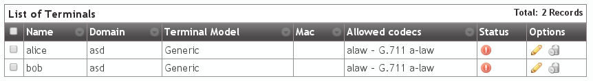
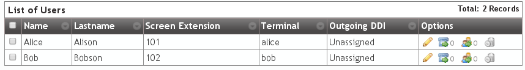

Company Configuration¶
We’re close to make our fist call in our fresh installed IvozProvider, there are only 6 steps to configure in our DemoCompany company.
- 2 terminals
- 2 extensions
- 2 users
Creating Terminals¶
Go to the terminal section and... voilà! We already have 2 terminals created:
Creating Extensions¶
Then we go to extensions, just to check that we have 2 extensions already created for us:

Nothing more to do in this section, let’s go the next one!
Creating Users¶
As expected, we also have 2 created users:
At this point, we have everthing ready make a call between this two users: Alice and Bob.